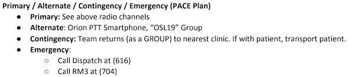
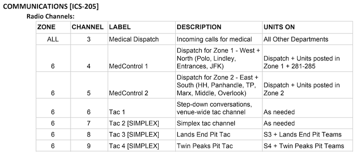

The purpose of any communications plan is the ability to pass messages, and thus, exchange information. In a field operating environment, where the users of a communications system may be physically separated, this plan may be strained by elements completely outside of the operators control. In these cases it's important to have a backup, or 3, thus the PACE Plan is born.
PACE stands for:
It's an important acronym to keep in mind when you're planning any operation and we often use it unconsciously in our day to day lives. For example:
If you don't hear from me, I'll pick you up by the front stairs at 8.
Primary and Contingency communications methods are expressed here.
In the case of a team that may be under threat, or may encounter situations beyond their resources, the ability to call for a backup is a must.
Working large festivals and events present numerous challenges for any communications system - Commercial Cellular systems are strained, Public Safety Radio systems are over-utilized, and rental radio systems can be poorly provisioned or managed (if at all!) A team providing Emergency Medical Services at an event like this must contend with these communications complexities, as well as the risks violence against crowds, emergent crisis, and more.

The Primary communications method is using the existing ICS-205 Communications Plan. This would be the routine method for EMS teams to communicate, and depending on their assignment, which other channel(s) to use. Every team is issued a radio with these zones & channels programmed in.

Alternative communications methods should use a system or transport that is independent of the Primary method. In the case of this Plan, a Cellular Push-to-Talk service called Orion was used. Every team was issued a SmartPhone running this App in addition to their other equipment.
The use of an Alternative communications method itself can fall into two categories:
If there is an absolute need to get a message through, then it's probably a very important message. In this case, if all methods up until now are either unavailable or lack the capacity to handle the message, then the Contingency method must be used. This method is typically the most costly of the previous two, but ensures that the message is delivered. In the case of this Plan, a human runner was used to pass the message.
While this is the last step in the PACE Plan, it should only be needed if there is a true emergency.